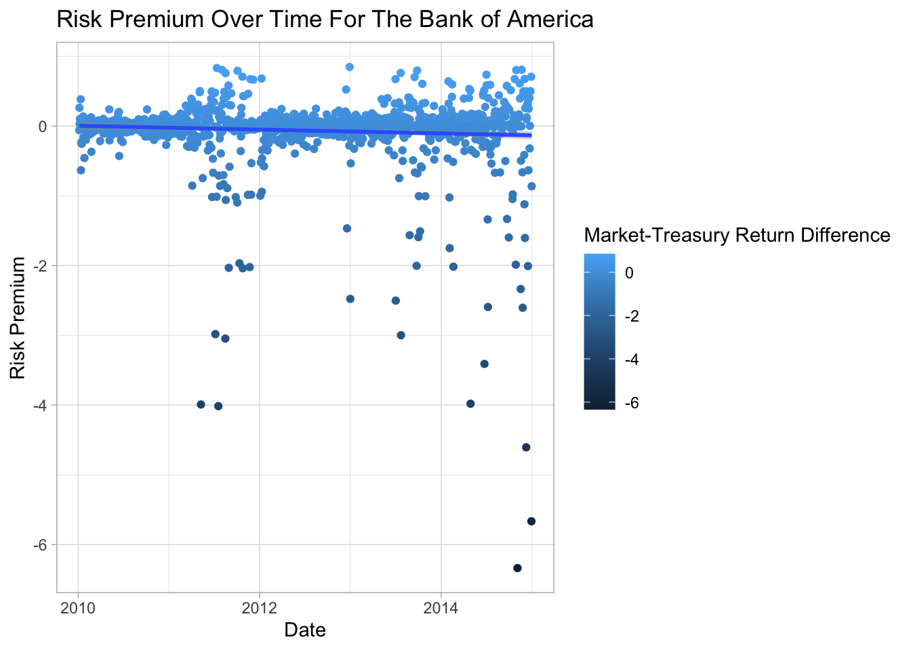
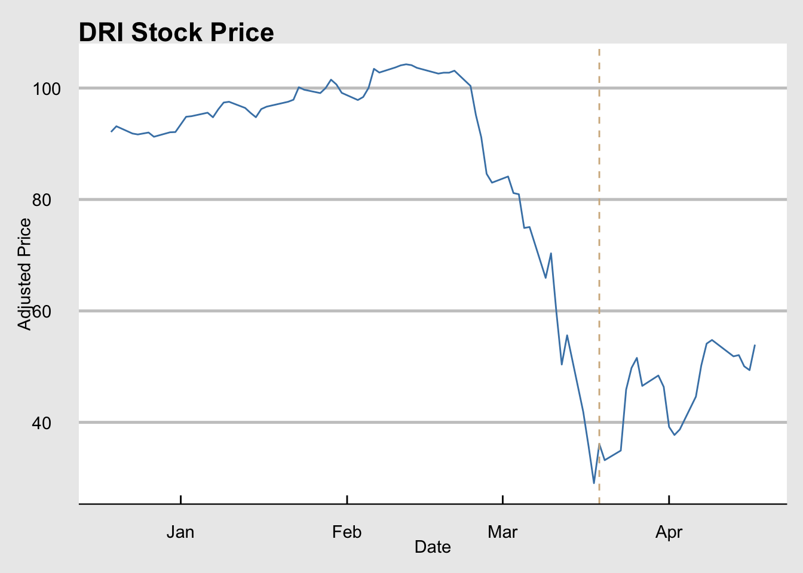
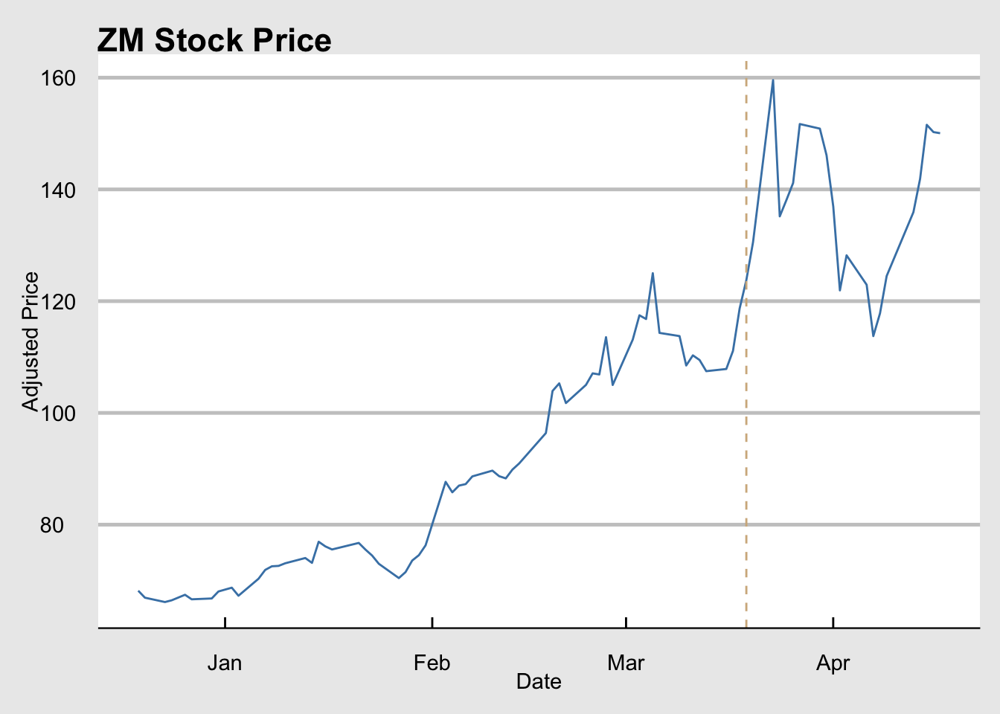
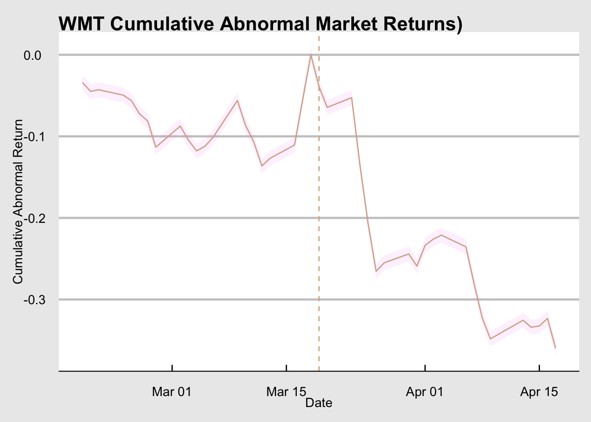

Registered S3 method overwritten by 'quantmod':
method from
as.zoo.data.frame zoo
── Attaching core tidyquant packages ─────────────────────── tidyquant 1.0.11 ──
✔ PerformanceAnalytics 2.0.8 ✔ TTR 0.24.4
✔ quantmod 0.4.28 ✔ xts 0.14.1
── Conflicts ────────────────────────────────────────── tidyquant_conflicts() ──
✖ zoo::as.Date() masks base::as.Date()
✖ zoo::as.Date.numeric() masks base::as.Date.numeric()
✖ PerformanceAnalytics::legend() masks graphics::legend()
✖ quantmod::summary() masks base::summary()
ℹ Use the conflicted package (<http://conflicted.r-lib.org/>) to force all conflicts to become errors
library(tidyverse)
── Attaching core tidyverse packages ──────────────────────── tidyverse 2.0.0 ──
✔ dplyr 1.1.4 ✔ readr 2.1.5
✔ forcats 1.0.0 ✔ stringr 1.5.1
✔ ggplot2 3.5.1 ✔ tibble 3.2.1
✔ lubridate 1.9.4 ✔ tidyr 1.3.1
✔ purrr 1.0.2
── Conflicts ────────────────────────────────────────── tidyverse_conflicts() ──
✖ dplyr::filter() masks stats::filter()
✖ dplyr::first() masks xts::first()
✖ dplyr::lag() masks stats::lag()
✖ dplyr::last() masks xts::last()
ℹ Use the conflicted package (<http://conflicted.r-lib.org/>) to force all conflicts to become errors
library(data.table)
Attaching package: 'data.table'
The following objects are masked from 'package:lubridate':
hour, isoweek, mday, minute, month, quarter, second, wday, week,
yday, year
The following objects are masked from 'package:dplyr':
between, first, last
The following object is masked from 'package:purrr':
transpose
The following objects are masked from 'package:xts':
first, last
The following objects are masked from 'package:zoo':
yearmon, yearqtr
library(car)
Loading required package: carData
Attaching package: 'car'
The following object is masked from 'package:dplyr':
recode
The following object is masked from 'package:purrr':
some
stock <-tq_get(c("XOM", "BAC", "^GSPC", "^IRX"),get ="stock.prices",from ="2010-01-01",to ="2019-12-31",naa.rm =TRUE)# group data by datestock_clean <- stock %>%select(date, symbol, adjusted, volume, open, high, low, close) %>%pivot_wider(names_from = symbol,values_from =c(adjusted, volume, open, high, low, close) ) %>%na.omit()# My expectation is that Bank of America will be a riskier asset than Exxon since banks would probably be more prone to exposure to broader shifts in the economy# We are using US treasury yield as the risk free rate, s&p500 index as the market rate, EXXON as the risky rate and BAC as the safe rate# calculate returnsstock_clean$irx_return <- (stock_clean$`close_^IRX`-lag(stock_clean$`close_^IRX`)) /lag(stock_clean$`close_^IRX`) stock_clean$xom_return <- (stock_clean$close_XOM -lag(stock_clean$close_XOM)) /lag(stock_clean$close_XOM) stock_clean$bac_return <- (stock_clean$close_BAC -lag(stock_clean$close_BAC)) /lag(stock_clean$close_BAC) stock_clean$gspc_return <- (stock_clean$`close_^GSPC`-lag(stock_clean$`close_^GSPC`)) /lag(stock_clean$`close_^GSPC`) #Divide your sample in two, the first half spanning January 2010-December 2014, and the second half covering January 2015–December 2019. I want to work with the data from 2010-2014from2010to2014 <- stock_clean %>%filter(date >=as.Date("2010-01-01") & date <=as.Date("2014-12-31"))from2015to2019 <- stock_clean %>%filter(date>=as.Date("2015-01-01") & date<=as.Date("2019-12-31"))
B)
# Estimating the CAPM model# start by calculating market-riskfree dif and firm-riskfree dif for xomfrom2010to2014$excessreturn_xom <- from2010to2014$xom_return-from2010to2014$irx_returnfrom2010to2014$mrpremium <- from2010to2014$gspc_return-from2010to2014$irx_returnfrom2015to2019$excessreturn_xom <- from2015to2019$xom_return-from2015to2019$irx_returnfrom2015to2019$mrpremium <- from2015to2019$gspc_return-from2015to2019$irx_return# run xom model for each year bundlexom_model1 <-lm(data = from2010to2014, excessreturn_xom~mrpremium)summary(xom_model1)
Call:
lm(formula = excessreturn_xom ~ mrpremium, data = from2010to2014)
Residuals:
Min 1Q Median 3Q Max
-0.038727 -0.003741 0.000118 0.004001 0.031858
Coefficients:
Estimate Std. Error t value Pr(>|t|)
(Intercept) -0.0002530 0.0001966 -1.287 0.198
mrpremium 0.9996397 0.0003828 2611.634 <2e-16 ***
---
Signif. codes: 0 '***' 0.001 '**' 0.01 '*' 0.05 '.' 0.1 ' ' 1
Residual standard error: 0.006914 on 1254 degrees of freedom
(1 observation deleted due to missingness)
Multiple R-squared: 0.9998, Adjusted R-squared: 0.9998
F-statistic: 6.821e+06 on 1 and 1254 DF, p-value: < 2.2e-16
Call:
lm(formula = excessreturn_bac ~ mrpremium, data = from2015to2019)
Residuals:
Min 1Q Median 3Q Max
-0.056393 -0.006984 -0.000624 0.006376 0.071586
Coefficients:
Estimate Std. Error t value Pr(>|t|)
(Intercept) 0.0002645 0.0003413 0.775 0.439
mrpremium 0.9997472 0.0006809 1468.311 <2e-16 ***
---
Signif. codes: 0 '***' 0.001 '**' 0.01 '*' 0.05 '.' 0.1 ' ' 1
Residual standard error: 0.01203 on 1254 degrees of freedom
Multiple R-squared: 0.9994, Adjusted R-squared: 0.9994
F-statistic: 2.156e+06 on 1 and 1254 DF, p-value: < 2.2e-16
# It seems like all of my regressions came back with beta coefficients close to what would be expected if the individual stock just followed market trends. I dont see any meaningful deviation from this in the data. The only weirdness is in the alphas, where we rarely have statistical significance. This is not super surprising though, an. all alpha values are close to zero suggesting a very low excess of the stocks return being explained by more than just the beta coeficient. These are not ststistically significant though (might have to do with outliers?)
C)
It kind of seems like some of the major dips in premium for the Bank of America happen right around election cycles. I see that pre 2012 and pre 2016 there are some of the larger dips, but they are few and far between.
ggplot(data = from2010to2014, mapping =aes(x = date, y = excessreturn_bac, color = mrpremium)) +geom_point() +geom_smooth(method = lm) +theme_light() +labs(title ="Risk Premium Over Time For The Bank of America", x ="Date", y ="Risk Premium", color ="Market-Treasury Return Difference")
`geom_smooth()` using formula = 'y ~ x'
Warning: Removed 1 row containing non-finite outside the scale range
(`stat_smooth()`).
Warning: The following aesthetics were dropped during statistical transformation:
colour.
ℹ This can happen when ggplot fails to infer the correct grouping structure in
the data.
ℹ Did you forget to specify a `group` aesthetic or to convert a numerical
variable into a factor?
Warning: Removed 1 row containing missing values or values outside the scale range
(`geom_point()`).

D)E)
Hypothesis testing! In each of these hypothesis tests there is insufficient evidence to conclude that for D) the intercept differs from 0 and for E) the premium coefficient differs from 1. This is to be expected when firms have returns that are in line with market trends.
# hpoothesis test that a=0linearHypothesis(bac_model1, "(Intercept) = 0")
Linear hypothesis test:
(Intercept) = 0
Model 1: restricted model
Model 2: excessreturn_bac ~ mrpremium
Res.Df RSS Df Sum of Sq F Pr(>F)
1 1255 0.41107
2 1254 0.41107 1 7.6731e-06 0.0234 0.8784
linearHypothesis(xom_model1, "(Intercept) = 0")
Linear hypothesis test:
(Intercept) = 0
Model 1: restricted model
Model 2: excessreturn_xom ~ mrpremium
Res.Df RSS Df Sum of Sq F Pr(>F)
1 1255 0.060020
2 1254 0.059941 1 7.9118e-05 1.6552 0.1985
# the f stat being effectively 0 with a relatively high p value indicates that we cannot reject the null hypothesis.# I think that a rejection out the null in this case would probably invalidate the results, as a nonzero alpha indicates that the market risk does not fully explain the abnormal returns. # Using the lilinearHypothesis(bac_model1, "mrpremium = 1")
Linear hypothesis test:
mrpremium = 1
Model 1: restricted model
Model 2: excessreturn_bac ~ mrpremium
Res.Df RSS Df Sum of Sq F Pr(>F)
1 1255 0.41129
2 1254 0.41107 1 0.00022808 0.6958 0.4044
linearHypothesis(xom_model1, "mrpremium = 1")
Linear hypothesis test:
mrpremium = 1
Model 1: restricted model
Model 2: excessreturn_xom ~ mrpremium
Res.Df RSS Df Sum of Sq F Pr(>F)
1 1255 0.059983
2 1254 0.059941 1 4.236e-05 0.8862 0.3467
# from this I find that the null hypothesis can only be rejected for the more volatile industry, the Bank of America.# For the bank I dont find this surprising since it was shown to not follow market trends. For Exxon I also dont find the nonrejection surprising since it was fairly normal in paramaters.
F)
The output I received showing proportional market risk makes lots of sense and confirms that the stocks I chose are normal market movers. The market risk proportion is close to 1 for both indicating that almost all of the risk and excess returns from each company can be explained by the more systematic market risk. The market movements explain the volatility.
# bank of america prop riskbeta <-coef(bac_model1)market_var <-var(from2010to2014$mrpremium, na.rm =TRUE)asset_var_bac <-var(from2010to2014$excessreturn_bac, na.rm =TRUE)# Proportion of risk attributable to marketproportion_market_risk_bac <- (beta^2* market_var) / asset_var_bacprint(proportion_market_risk_bac)
In my sample, large estimates of $\beta$ definitely correspond with higher R2 values. This makes sense given what we have learned about the two stocks in question being pretty highly linked in behavior to broader market moves. I would not expect this to always be the case though. We could imagine a case where a stock has a very small (negative) beta value but a high R^2. In this scenario, maybe the beta value implies effectively opposite movements to the broader market. This can still be well explained by the model, it just operates in the opposite way that we would a typical “market-tracking” stock to.
4) Is January Different?
A)
The market risk premium would be unaffected in this case because there would be no change in compensation for risk to speak of since everything is scaling up. Adding or subtracting the same amount from both of them would leave their difference unchanged. In the case that the risk free and market are affected by the same amount, using CAPM wouldn’t make sense because the excess return relation would remain unchanged as stated before. It would probably make more sens to interpret January is different as something that applies to only riskier assets for it to be reasonable to test with the CAPM framework. This is due to the fact that CAPM prices excess returns while in this scenario, the risk premium would be no different than other times of the year, fuzzing any real effect.
B)
In this case I think it is clear that the market risk premium would be higher by \(j_m\) because it is specified that only the risk free is not being affected. If \(a\) and \(β\) were constant we would have \(r'_p = r_f+β(r_m−r_f)+β_{jm}=r_p+β_{jm}\)which absent \(β_{jm}\) is just \(rf+β(rm−rf)=rp\) which is just the same equation as in the typical non-January months. I think this would indicate that unable to individually identify \(j_m\) CAPM wouldn’t allow you to distinguish January from the rest of the months.
C)D)
# download monthly price data for the companies of interest: Apple, Exxon, and Chase (3 different industries).library(ggthemes)library(tidyquant)library(tidyverse)library(car)# Define tickers and date rangetickers <-c("AAPL", "BAC", "XOM")start_date <-"2010-01-01"end_date <-"2019-12-31"# Download monthly prices for each tickerprices_monthly <-tq_get( tickers,from = start_date,to = end_date,get ="stock.prices",periodicity ="monthly")prices_monthly <- prices_monthly %>%mutate(jan_dummy =ifelse(month(date) ==1, 1, 0)) %>%group_by(symbol) %>%arrange(date) %>%mutate(rp = (adjusted /lag(adjusted)) -1) %>%ungroup()# Get S&P 500 data and calculate market returnssp500 <-tq_get("^GSPC", from = start_date, to = end_date, get ="stock.prices", periodicity ="monthly") %>%arrange(date) %>%mutate(rm = (adjusted /lag(adjusted)) -1)# Merge stock and market returnsprices_monthly_joined <- prices_monthly %>%left_join(sp500 %>%select(date, rm), by ="date")# Filter out rows with NA in rp or rm before running regressionsrun_model <-function(symbol) { data <- prices_monthly_joined %>%filter(symbol == symbol, !is.na(rp), !is.na(rm)) model <-lm(rp ~ rm + jan_dummy, data = data)summary(model)}# Run and print summaries for each companycat("AAPL:\n")
AAPL:
print(run_model("AAPL"))
Call:
lm(formula = rp ~ rm + jan_dummy, data = data)
Residuals:
Min 1Q Median 3Q Max
-0.207901 -0.034834 -0.004003 0.038635 0.236591
Coefficients:
Estimate Std. Error t value Pr(>|t|)
(Intercept) 0.002307 0.003450 0.669 0.504
rm 1.206637 0.090195 13.378 <2e-16 ***
jan_dummy -0.009112 0.012181 -0.748 0.455
---
Signif. codes: 0 '***' 0.001 '**' 0.01 '*' 0.05 '.' 0.1 ' ' 1
Residual standard error: 0.06076 on 354 degrees of freedom
Multiple R-squared: 0.3358, Adjusted R-squared: 0.332
F-statistic: 89.49 on 2 and 354 DF, p-value: < 2.2e-16
cat("\nXOM:\n")
XOM:
print(run_model("XOM"))
Call:
lm(formula = rp ~ rm + jan_dummy, data = data)
Residuals:
Min 1Q Median 3Q Max
-0.207901 -0.034834 -0.004003 0.038635 0.236591
Coefficients:
Estimate Std. Error t value Pr(>|t|)
(Intercept) 0.002307 0.003450 0.669 0.504
rm 1.206637 0.090195 13.378 <2e-16 ***
jan_dummy -0.009112 0.012181 -0.748 0.455
---
Signif. codes: 0 '***' 0.001 '**' 0.01 '*' 0.05 '.' 0.1 ' ' 1
Residual standard error: 0.06076 on 354 degrees of freedom
Multiple R-squared: 0.3358, Adjusted R-squared: 0.332
F-statistic: 89.49 on 2 and 354 DF, p-value: < 2.2e-16
cat("\nBAC:\n")
BAC:
print(run_model("BAC"))
Call:
lm(formula = rp ~ rm + jan_dummy, data = data)
Residuals:
Min 1Q Median 3Q Max
-0.207901 -0.034834 -0.004003 0.038635 0.236591
Coefficients:
Estimate Std. Error t value Pr(>|t|)
(Intercept) 0.002307 0.003450 0.669 0.504
rm 1.206637 0.090195 13.378 <2e-16 ***
jan_dummy -0.009112 0.012181 -0.748 0.455
---
Signif. codes: 0 '***' 0.001 '**' 0.01 '*' 0.05 '.' 0.1 ' ' 1
Residual standard error: 0.06076 on 354 degrees of freedom
Multiple R-squared: 0.3358, Adjusted R-squared: 0.332
F-statistic: 89.49 on 2 and 354 DF, p-value: < 2.2e-16
# In this case the market premium definitely matters but January still does not!
E)
From my analysis I can conclude that for the companies I looked at and in the time frame of interest, January was not in fact different than the other months of the year. I tested this hypothesis in various ways including a simple jan dummy in addition to running a CAPM with a separate January intercept, none of which turned up results that were statistically significant. January is NOT different.
5) COVID Lockdown - Event Studies
A)
library(tidyquant)library(lubridate)library(tidyverse)# Define tickers and date rangetickers <-c("DRI", "ZM", "PTON", "COST", "WMT", "^GSPC")start_date <-"2019-09-19"end_date <-"2022-09-18"# Download daily stock prices for each tickerprices_daily <-tq_get( tickers,from = start_date,to = end_date,get ="stock.prices",periodicity ="daily")# defining date:event_date <-as.Date("2020-03-19")prices_daily <- prices_daily %>%mutate(event_day =as.numeric(date - event_date))# calculate % change in prices before and after the event_datebefore <- prices_daily %>%filter(event_day ==-30| event_day ==-1) %>%group_by(symbol) %>%arrange(date) %>%summarise(change =last(adjusted) /first(adjusted) -1)after <- prices_daily %>%filter(event_day ==0| event_day ==30) %>%group_by(symbol) %>%arrange(date) %>%summarise(change =last(adjusted) /first(adjusted) -1)# make df for the plotto_plot <- prices_daily %>%filter(date >= event_date %m-%months(3), date <= event_date %m+%months(1))# plotting darden adjusted over timeto_plot %>%filter(symbol =="DRI") %>%ggplot(aes(x = date, y = adjusted)) +geom_line(color ="steelblue") +geom_vline(xintercept =as.numeric(event_date), linetype ="dashed", color ="tan") +labs(title ="DRI Stock Price",x ="Date", y ="Adjusted Price") +theme_economist_white()

to_plot %>%filter(symbol =="ZM") %>%ggplot(aes(x = date, y = adjusted)) +geom_line(color ="steelblue") +geom_vline(xintercept =as.numeric(event_date), linetype ="dashed", color ="tan") +labs(title ="ZM Stock Price",x ="Date", y ="Adjusted Price") +theme_economist_white()

#daily returnsdaily_returns <- prices_daily %>%group_by(symbol) %>%arrange(date) %>%mutate(return = (adjusted /lag(adjusted)) -1)est_start <- event_date %m-%months(3)est_end <- event_date -1darden <- daily_returns %>%filter(symbol =="DRI")zoom <- daily_returns %>%filter(symbol =="ZM")# Mean return for eachdr_mean <- darden %>%filter(date >= est_start, date <= est_end) %>%summarise(mu =mean(return, na.rm =TRUE)) %>%pull(mu)zm_mean <- zoom %>%filter(date >= est_start, date <= est_end) %>%summarise(mu =mean(return, na.rm =TRUE)) %>%pull(mu)# Event window (e.g., -5 to +5 days around event)darden_event <- darden %>%filter(event_day >=-5, event_day <=5) %>%mutate(abnormal = return - dr_mean)zoom_event <- zoom %>%filter(event_day >=-5, event_day <=5) %>%mutate(abnormal = return - zm_mean)calc_dar <-function(darden_event) { darden_event %>%mutate(CAR =cumsum(abnormal)) %>%mutate(se =sd(abnormal, na.rm=TRUE)/sqrt(n()),lower = CAR -1.96*se, upper = CAR +1.96*se)}calc_zoo <-function(zoom_event) { zoom_event %>%mutate(CAR =cumsum(abnormal)) %>%mutate(se =sd(abnormal, na.rm=TRUE)/sqrt(n()),lower = CAR -1.96*se, upper = CAR +1.96*se)}darden_event <-calc_dar(darden_event)zoom_event <-calc_zoo(zoom_event)# Plots for both darden and zoom for Cumulative Abnormal Returnsggplot(darden_event, aes(x = event_day, y = CAR)) +geom_line(color ='tan') +geom_ribbon(aes(ymin = lower, ymax = upper), alpha =0.2) +labs(title="Darden Event: Cumulative Abnormal Returns",x ="Event Day", y ="CAR") +theme_economist_white()
Before the lockdown, prices changes by change COST -4.52% DRI -72.65% PTON -4.76% WMT +2.47% ZM +23.16% ^GSPC -28.85%
The daily return for Darden during the event window was -24.66%, -14.79%, -18.53%, +24.18%, -8%, +5%, and +31.34% while for Zoom it was +0.36%, +3%, +6.89%, +4.26%, +5.48%, +22.22%, and -15.28%.
wmt <- daily_returns %>%filter(symbol =="WMT") %>%left_join(gspc_df, by ="date")# Generate the window prior to event event_date <-as.Date("2020-03-19")est_start <- event_date %m-%months(1)est_end <- event_date -1wmt_est <- wmt %>%filter(date >= est_start, date <= est_end)# run the market model similar to beforemod <-lm(return ~ sp500_return, data = wmt_est)alpha <-coef(mod)[1]beta <-coef(mod)[2]# a=0.0139 and b= 0.7895# define window (1 month before/after)window <- wmt %>%filter(date >= event_date %m-%months(1), date <= event_date %m+%months(1))window <- window %>%mutate(abnormal = return - (alpha + beta * sp500_return))# grab cumulative abnormal returns window <- window %>%mutate(CAR =cumsum(abnormal))# generate CI around the cumulative abnormal returnsar_sd <-sd(window$abnormal, na.rm =TRUE)n <-nrow(window)window <- window %>%mutate(lower = CAR -1.96* ar_sd /sqrt(n),upper = CAR +1.96* ar_sd /sqrt(n))# create a graphic of cumulative abnormal returns for the marketggplot(window, aes(x = date, y = CAR)) +geom_line(color ='tan') +geom_ribbon(aes(ymin = lower, ymax = upper), alpha =0.1, fill ="violet") +geom_vline(xintercept =as.numeric(event_date), linetype ="dashed", color ="tan") +labs(title ="WMT Cumulative Abnormal Market Returns)", x ="Date", y ="Cumulative Abnormal Return") +theme_economist_white()

I have successfully computed and plotted all of the CAR using a market model for each stock over the specified event window. SUrprisingly, Darden spiked a bit in a period where, given that it’s industry, would be unexpected. After using the market model rather than just price changes, the outcome does change and the event seems to have a significant impact on Darden. This effect however, is positive??? This is odd.
It seems like whether the market sees the lockdown as a good or a bad thing depends on the industry. WTM and COST have decreasing returns on average during the post lockdown period, suggesting that grocery stores see a decrease. This feels counterintuitive to me as since more people are staying home I would expect them to eat out less. Perhaps it could be that people are ordering more food now rather than going to buy things to avoid going out. Darden and Peloton see positive returns on average in the post period, which in some ways backs my arguement of people ordering takeout more often rather than going to grocery stores. I think the PTON could be explained by the fact that they focus on “connective fitness” which is largely remote (makes sense if people stay home). THe “Zoom Boom” makes a lot of sense intuitively, as people would now be more likely to meet remotely since they arent leaving their homes. I think the market viewed the effect of lockdowns on different industries differently because different industries could benefit more or less from peoples tendency to leave their homes.